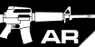
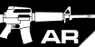

| 이름 | M16A1 |
| 총기의 국적 |  |
| 분류 |  |
| 성우 | Yamane Nozomi |
| 일러스트 | 海猫络合物 |
| 비고 |
| 이름 | M16A1 |
| 총기의 국적 | |
| 분류 |  |
| 성우 | Yamane Nozomi |
| 일러스트 | 海猫络合物 |
| 비고 |
경험이 풍부한 베테랑이자, AR팀의 정신적인 지주, M4A1을 자주 격려하며, 중요한 순간에는 냉철한 면을 내비치기 때문에, M4A1이 가장 신뢰하며 의지하고 있는 동료이다. 언제나 M4A1의 안위를 우선시하는 경향이 있다. 술을 매우 좋아한다. 얼굴의 흉터는 화장으로 가릴 수 있지만, 어째서 아직까지 가리지 않고 남겨두고 있는건지는 아직까지 미스테리이다.
AR팀과 함께 S09구역 #3 세이프 하우스에서 리코가 남긴 자료들을 수색하던 중,임무를 수행하던 중, 철혈의 에이전트에게 공격을 받아 동료들로부터 뿔뿔이 흩어진다. 이후 S09구역 내에서 발견, UMP45가 남긴 【우산】계획에 대한 정보를 가진채 AR소대원 중에 가장 마지막으로 구출된다.